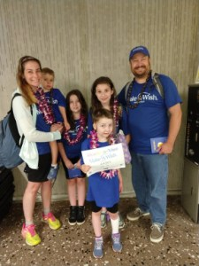
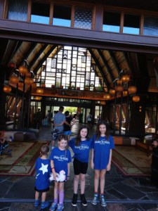
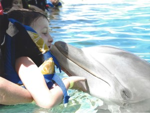

Warning -- The blog post you are about to read is long. Like, really long. But how does one write a short blog post when so much cool stuff happened to us on our big trip? Of course I have to include all the details so that readers like you can live vicariously through us! So grab a comfy seat, perhaps a snack and drink, and enjoy!
The Make-A-Wish Foundation is an organization that grants "wishes" to children with life-threatening medical conditions. We have known about this organization prior to Amber because we have some family members that have had wishes granted. However, when I first heard that Make-A-Wish wanted to meet Amber and get to know her, I cringed. Thoughts like 'I can't believe this is so serious that Make-A-Wish is contacting us...' and the 'never thought it would happen to us' went through my mind, and still does. The initial shock that, here we are, Matt and I, at this point in our lives where we are dealing with a child that is seriously sick is hard to swallow (still). But they really wanted to work with Amber and grant her wish(es). And we're so glad they did.
Make-A-Wish is an absolute superb foundation. Hands Down. What I am about to share with you will have you understand why.
Aloha!
Friday, August 10th, 2018 had us start off very very early by serenading our oldest daughter Marie with a "Happy Birthday" song, as she was turning 12 this very day. Later on we had our "ride" come pick us up to bring us to Logan Airport in Boston. Our ride turned out to be a beautiful black stretch limo! So big in fact that we told him to stay down by the road because our driveway would be too hard to maneuver with it being long and curvy. Amber needed no help as she climbed into the limo, beaming ear-to-ear!
Riding In Style!
After drop off at the airport, with our Make-A-Wish shirts on, we had some assistance from the JetBlue personnel helping us navigate through the security checkpoints and showing us to our specific gate where we waited for our plane. Now, this is all four of our children's first time at an airport and first time flying. It could have gone really really bad. But in fact, it went amazingly! They seemed like old pros! In fact, they did much better with all the travel (twelve hours in the air in each direction!) than most frequent fliers I know!
As we are on our descent into Honolulu, with the sunset casting its last shades of yellows and oranges, I started rousing Amber and Ryan as they have both fallen asleep on me. We gathered our goodies that were given to us special by the flight attendant because of our reason for being there that day as well as him getting to know Amber, and we head off the plane. As we were leaving, the pilot comes out to say hello and give the kids "official" passport books and their very own wings. As we were heading to our gate, Matt and a man he befriended on the plane, Officer Jones, were chatting and he tells us about how he's been serving our Country and that he is coming home to O'ahu to see his baby girl and wife. He says he loves the Make-A-Wish Foundation and asks to take a picture with us.

Officially Got Our Leis
After we were done taking the picture, the flight attendants from our flight pass by and come over for a "GROUP HUG"!!! We all get in there for big hugs -- and why not? We are all happy and in good spirits, how could you not be being in Hawai'i? After officially getting our leis, we are whisked away to a van that is waiting to bring us to our hotel. It takes only about 40 minutes from the airport. I am surprised that everyone actually stays awake - because while it may be only 8PM in Hawai'i, our bodies think it is 2AM CT time. It's either the good naps most had or just the sheer excitement of us being in Hawai'i and anticipation of getting to our resort, Disney's Aulani.
We arrive at Aulani and are greeted with more leis and really cool Menehune necklaces for the kids. Legend has it that the Menehune are little mythical pranksters in Hawai'i but if you are wearing the necklace they will consider a you "foa" (friend) and not trick you. Ryan took this very seriously the whole week we were there! We are then brought up to our room. The room is spacious and beautiful. It has a kitchen with a full fridge, microwave, dishwasher, glassware, plates and utensils. A living room with a sofa that pulled out, a chair that pulled out, and a lanai. 2 bedrooms: the first having 2 queens with it's own bathroom and lanai, and the second being the master with a spacious bathroom with a jetted tub and walk in shower (with 2 shower heads!) and of course, our own private lanai.
Perfect View Of The Beautiful Ocean From Our Room
In addition to all this, there was also a 1/2 bath and a washer and dryer! Our lanais were perfect for seeing the picturesque ocean as well as Luaus! The Luaus were held right below us on the green.
Disney's Aulani Resort was themed like I would expect Hawai'i to be -

Aulani Resort
very ornate, with lots of wooden/natural decor as well as beautifully hand painted Hawaiian wall murals that locals painted. The landscape was lush with tropical flowering plants and bushes, palm trees, koi ponds, and lit tiki torches at night. The resort had an abundance of pools, infinity pools, hot tubs, a lazy man river, water slides, and my favorite, access to the beautiful beach and Pacific Ocean.
It was hard to break away from the resort but sometimes we did. On our first full day there we spent a good amount of time down at the beach and then some water park time. After a while, it was time to leave for church.
We hired a driver and he took us to Saint Jude Church in Kapolei. Saint Jude? Really? Talk about things that sometimes just make you go "Hmm". Very fitting I would say! A very welcoming and friendly church and church community.
The next day (Sunday) was set up for us to visit a place called Sea Life Park. The drive was about an hour but totally worth it. The scenes that passed before my eyes were wonderful. Greenery, mountains, tropical plants and bushes, and of course the gorgeous coast line. I am very thankful for that long car ride because we got to see quite a bit of the the island of O'ahu, even passing the famous Sandy Beach, with all the surfers in the water. Not sure if kids were too thrilled because the two oldest fell asleep! But Amber was glued to the window watching the scenery the whole way.
Sea Life Park is awesome! There was so much to do! We got to experience seeing ocean and animal life native to that part of the world. Sting rays, sharks, fish, dolphins, sea lions, penguins (yes, we saw penguins in Hawai'i!) and birds. The aviary was the coolest and a favorite among Brianna and Marie. Inside the aviary, you got to pick up a popsicle stick with bird seed on it and feed the birds. We were in luck too, because sometimes, the birds would land on your stick so you could observe them up close and personal!
Scenery At Sea Life Park
And, what's even more lucky, is when the birds actually land on you like they did to both Brianna and Matt! So cool! As we were walking along and checking everything out you just had to stop and take in the views and the scenes because they were breathtaking. After an awesome dolphin show it was time for Amber and I to get into our bathing suits and go to the Dolphin Encounter, which was set up for us by Make-A-Wish.

If you ask Amber what was one of her favorite parts about this vacation, she will tell you it was meeting the dolphin! It was the coolest thing ever! We got to pet, feed, kiss, get splashed by, and dance with a dolphin named Eanka!
Meeting Moana
Later on in the week, Make-A-Wish set up a program for the children to attend called "Fish are Friends" where they got to make special fish food, feed the fish around the resort, and learn all about the native fish. The kids enjoyed making fish food and feeding the fish - but we had to chuckle when they told us it was too "educational" to do on vacation!!!
Throughout our vacation we had the opportunity to meet some Disney characters. Amber was really looking forward to meeting Moana, which we did, and Ryan was really looking forward to meeting Pluto, which he did! The kids also got to meet Mickey, Minnie, and Goofy.
One of the things that I was most looking forward to was being able to witness, first hand, a Hawaiian sunset. I have always heard about them but didn't think I would ever have the chance to see one. Now Matt can tell you that my thing is sunsets and sunrises. There is just something so special, and so glorious about them. The way the colors explode and cascade and melt together, it is truly a gift from God for us to witness. However, up until this point, I hadn't experienced that yet. And my evenings were coming to an end. I caught some sunsets over the first few days, and they were pretty, but . . . it wasn't thee Hawaiian sunset I had envisioned in my mind. Okay, so it's very possible that my expectations were either too high or maybe I was just in the wrong spot at the right time. And luckily for me, it was the latter.
After a day of water park activities in mostly cloudy weather, my expectations for catching a sunset this night was really low. It was my last potential night because tomorrow night, our last night, we had a Luau planned for the kids. So this night was my only opportunity.
Mer-Fairy, Amber Grace
At around 6PM that evening we took the kids down to the beach for some pictures. I wanted to get pictures of a beautiful-magical Mer-Fairy named Amber Grace (another wish she had) and her beautiful-magical sisters. As I was getting some shots, the clouds had parted away to let a bit of the sunset shine through. When we finished up, I felt a pang of let down. Again, the sunset was pretty but not what I was hoping. Matt suggested I walk down the opposite side of the beach to an area that had a curve around it with a hill and jutted out point -- and boy am I glad! As I started walking down the beach towards the point, I had to stop, stare, and pull my camera out because it was so beautiful! I grabbed Ryan's hand and we started walking further down and up the hill, even closer to the point and every so often I had to just stop, because literally, the words "WOW" came out of my mouth. THIS is what I wanted, this is what I had envisioned -- NO --
Thank You God
actually it was so much more than what I had envisioned . . . it was breathtaking and it was immaculate and it was glorious. To the point where once Ryan and I were at the top of the point watching this magnificent cascade of colors in front of us, I had to say a prayer to God. I had to thank him for everything; for this moment, for us being here in Hawai'i, for Amber being alive today and here today with us; for Amber's health and that if somehow she could be miraculously healed and cured of cancer; and for my children and for my husband, and for all of the people on my prayer list that are in need of something right now. Thank you God for allowing me to witness such spectacular beauty.
Towards the last day of our vacation, we found ourselves, once again, hooked up by Make-A-Wish with our own personal Meet and Greet with none other than Mickey Mouse himself!
Personal Meet & Greet
We got to hang out (just us!) and get lots and lots of pictures with Mickey! Later on that evening, Matt and I took the kids to that infamous Luau we kept seeing from way up on our lanai. We totally had to check it out! I am so glad we did. It was so much fun! They had traditional Hawaiian fare as well as a show. The Hula dancers and story tellers did an amazing job of mesmerizing us with the music, songs, and stories of the Hawaiian people. In the story they tell of the history of Hawai'i as well as what a deep impact our "ohana" (family) has in our lives and that Aloha does not only mean Hello and Goodbye but also the love that we hold inside of our hearts. And that is what we experienced this week in O'ahu, Hawai'i. The love that we hold in our hearts, especially when it comes to our family. And by the end of the night, Ryan was asleep in Matt's lap, and Amber enjoying the show in my lap. It was a beautiful way to end our trip, with our ohana.
At The Luau
Make-A-Wish made a life-time of memories with this extraordinary trip to Hawai'i. We are so blessed and so extremely grateful for their generosity.
And now...it is back to reality. And reality being -- SCHOOL STARTS TOMORROW!!! School starts tomorrow for everyone. I am so happy to announce that Amber will be going back to her school tomorrow, at Saint Joseph School! And also, because I said everyone, I also mean Ryan too. And as I am typing this, I am trying not to cry because my baby, Ryan, is actually starting Pre-K tomorrow. When did my baby get big enough to go to school? This is crazy right? Geesh!
Also, if you could please send positive thoughts and say extra prayers for Amber, her next MRI is scheduled for Friday, September 7th, 2018.
And lastly -- a BIG ALOHA from our family to yours!!!
~~ The Shaka -- A Friendly Greeting Of Thanks & Praise From The Smith Family ~~
Did you really just read it all? The whole post? Congratulations!!! It must be what, like 2 hours later?
We so appreciate all of you that have taken the time to read about Amber's journey, and spent the energy to send prayers, thoughts, and well-wishes for her and for us. Thank you ;-)

{kind=link}
2 comments
Caron, thank you for sharing this, we are praying to St. Peregrine for intercession prayer twice a day.
May God Bless and protect your family.
You are all in our hearts, thoughts, and prayers.
Caron, thank you for sharing this, we are praying to St. Peregrine for intercession twice a day.
May God Bless and protect your family.
You are all in our hearts, thoughts, and prayers.